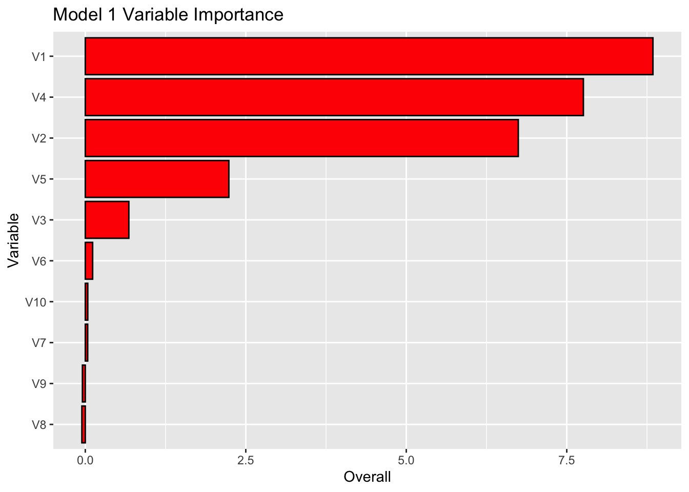
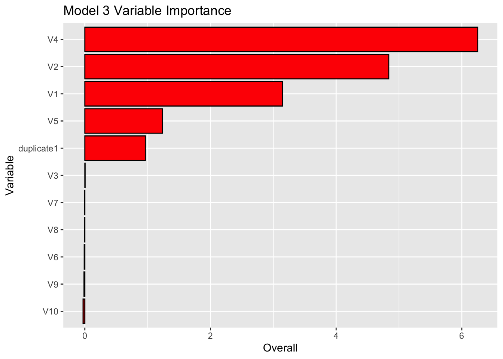
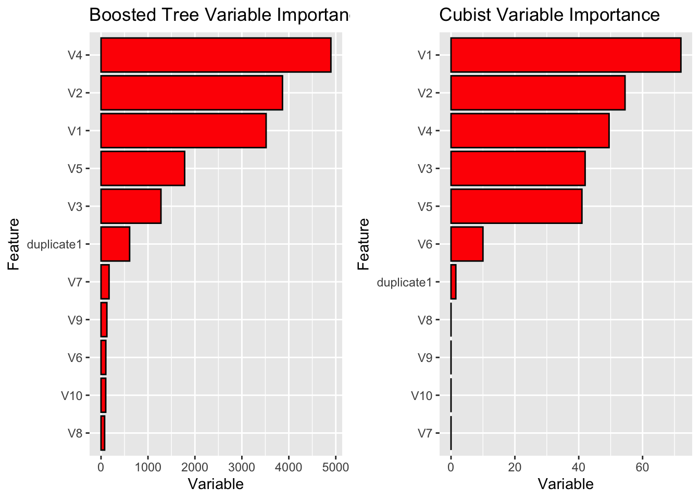

library(mlbench)
library(tidyverse)
library(base)
library(MASS)
library(earth)
library(AppliedPredictiveModeling)
library(randomForest)
library(caret)
set.seed(200)
simulated <- mlbench.friedman1(200, sd = 1)
simulated <- cbind(simulated$x, simulated$y)
simulated <- as.data.frame(simulated)
colnames(simulated)[ncol(simulated)] <- "y"Exercise 5
8.1 - Recrease simulated data from Exercise 4
a. Fit a random forest model to all of the predictors, then estimate the variable importance scores:
model1 <- randomForest(y ~ ., data = simulated, importance = TRUE, ntree = 1000)
rfImp1 <- varImp(model1, scale = FALSE)
print(rfImp1) Overall
V1 8.84289608
V2 6.74508245
V3 0.67830653
V4 7.75934674
V5 2.23628276
V6 0.11429887
V7 0.03724747
V8 -0.05349642
V9 -0.04495617
V10 0.03863205Did the random forest model significantly use the uninformative predictors (V6 - V10)?
rfImp1 %>%
mutate (var = rownames(rfImp1)) %>%
ggplot(aes(Overall, reorder(var, Overall, sum), var)) +
geom_col(fill = 'red', colour = 'black') +
labs(title = 'Model 1 Variable Importance' , y = 'Variable')
** The cumulative bar graph above shows that V6-10 were not significantly used in our random forest model.**
c. Use the cforest function in the party package to fit a random forest model using conditional inference trees. The party package function varimp can calculate predictor importance. The conditional argument of that function toggles between the traditional importance measure and the modified version. Do these importances show the same pattern as the traditional random forest model?
library(partykit)
library(party)
# Fit cforest model
set.seed(123)
cf_model <- cforest(y ~ ., data = simulated, controls = cforest_unbiased(ntree = 1000))
# Calculate variable importance
cf_varimp <- varimp(cf_model, conditional = FALSE)
print(cf_varimp) V1 V2 V3 V4 V5 V6
6.762175680 6.011214623 -0.002809259 7.857594235 2.053362995 0.007422406
V7 V8 V9 V10 duplicate1
0.033006890 -0.025242264 0.008089810 -0.057880930 2.773897304 # Calculate conditional variable importance
cf_cond_varimp <- varimp(cf_model, conditional = TRUE)
print(cf_cond_varimp) V1 V2 V3 V4 V5 V6
3.186416009 4.786623908 0.004089477 6.277869376 1.186573199 0.009167534
V7 V8 V9 V10 duplicate1
0.007945494 -0.019904985 -0.002481725 -0.021467387 1.006965608 rf_model3 <- cforest(y ~ ., data = simulated)
rfImp3 <- varimp(rf_model3, conditional = TRUE) %>% as.data.frame()
rfImp3 %>%
rename(Overall = '.') %>%
mutate (var = rownames(rfImp3)) %>%
ggplot(aes(Overall, reorder(var, Overall, sum), var)) +
geom_col(fill = 'red', colour = 'black') +
labs(title = 'Model 3 Variable Importance' , y = 'Variable')
** The pattern of importance remains the same and V6-V10 remain unimportant.**
d. Repeat this process with different tree models, such as boosted trees and Cubist. Does the same pattern occur?
library(gbm)
# Fit gbm model
set.seed(123)
gbm_model <- train(y ~ ., data = simulated, method = "gbm", trControl = trainControl(method = "cv"), verbose = FALSE)
# Calculate variable importance
gbm_varimp <- varImp(gbm_model, scale = FALSE)
print(gbm_varimp)gbm variable importance
Overall
V4 4896.32
V2 3865.06
V1 3516.32
V5 1781.39
V3 1276.47
duplicate1 609.03
V7 170.98
V9 124.41
V6 101.75
V10 100.11
V8 76.49library(Cubist)
# Fit Cubist model
set.seed(123)
cubist_model <- train(y ~ ., data = simulated, method = "cubist", trControl = trainControl(method = "cv"))
# Calculate variable importance
cubist_varimp <- varImp(cubist_model, scale = FALSE)
print(cubist_varimp)cubist variable importance
Overall
V1 72.0
V2 54.5
V4 49.5
V3 42.0
V5 41.0
V6 10.0
duplicate1 1.5
V9 0.0
V7 0.0
V8 0.0
V10 0.0gbm_plot <- gbm_varimp %>%
ggplot(aes(Overall, reorder(var, Overall, sum), var)) +
geom_col(fill = 'red', colour = 'black') +
labs(title = 'Boosted Tree Variable Importance' , y = 'Variable')cubist_plot <- cubist_varimp %>%
ggplot(aes(Overall, reorder(var, Overall, sum), var)) +
geom_col(fill = 'red', colour = 'black') +
labs(title = 'Cubist Variable Importance' , y = 'Variable')library(ggpubr)
ggarrange(gbm_plot, cubist_plot)
V1-V5 are both significant predictors in the boosted tree and cubist models, but their patterns of importance differ. The ranked order (most -> least important) for the boosted tree model is V4, V2, V1, V5, and V3. The ranked order for the Cubist model is V1, V2, V4, V3, and V5.